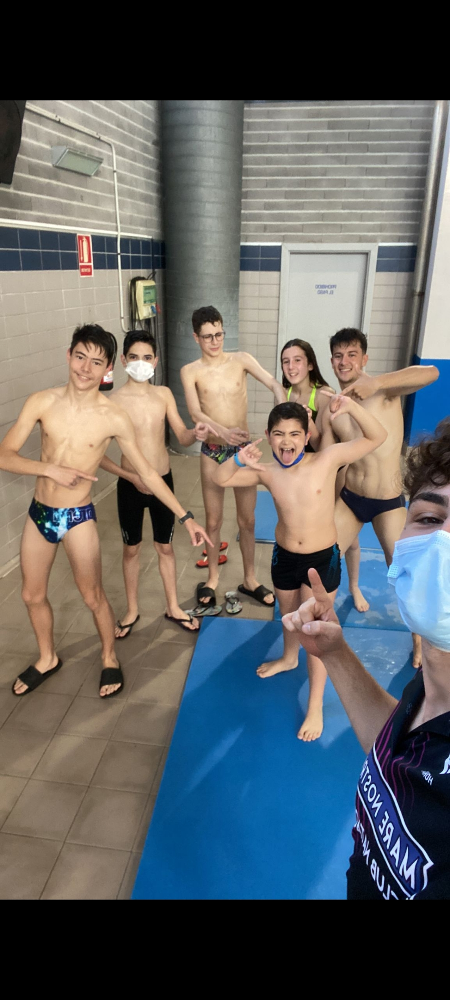
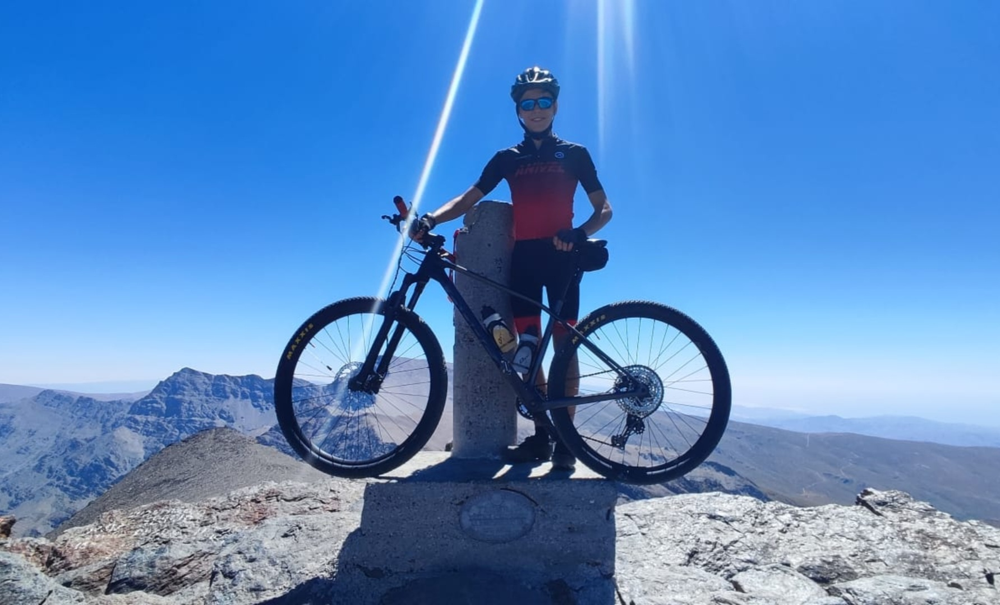

A lo largo de toda mi vida he ido adquiriendo una notable atracción por los deportes, y para mi ahora son mi vida y sin ellos no sería nada, algunos de los deportes que he practicado son la natación, el ciclismo, el snowboard y el gimnasio, pero los más destacados son la natación y el ciclismo.
Empecé en natación a los 6 años por voluntad propia, empecé en un cursillo para aprender lo básico y cuando fui adquiriendo practica mi monitor me dijo que me apuntase al club para competir, pero yo no quería por miedo a que las competiciones me salieran mal, finalmente a los 11 años decidí apuntarme al club y me puse más fuerte, llegando a competir a nivel de andalucía. Para mi la natación fue algo extraordinario que me mantuvo en forma e hizo que hiciera muchos amigos.
Mi Padre y mi primo influyeron en mi para que me metiese en el mundo del ciclismo y a mis 13 años empecé a salir con la bici con mi padre, cuando adqurí resistencia y conocimientos
Y esta es la tarea de mi compañero:
Trabajo David